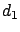
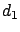

Siguiente: Atenuación por múltiples cuchillos
Subir: Propagación sobre terrenos irregulares
Anterior: Propagación por difracción
Índice General
Elipsoides de Fresnel
Sea la geometría de la figura 4.3, donde es una
fuente puntual. Si para hallar la expresión del campo en se
aplica el principio de Huygens sobre el frente esférico generado por
, se llega intuitivamente al concepto de las denominadas
Elipsoides de Fresnel. De todas las ondas generadas por las
fuentes puntuales del frente y que arriban a , la que llega
con mayor potencia es la generada por la fuente en (es decir, la
que ``recorre'' el camino más corto). El resto también arribará a
pero por un camino más largo y por lo tanto con la potencia
disminuida por la propagación en vacío. Dependiendo de la fase con
que arriben, aportarán a la potencia total de recepción o
simplemente interferirán destructivamente y por ende la disminuirán.
La fase con respecto a la onda generada en de aquella generada
en el punto  al arribar a R se puede calcular como:
al arribar a R se puede calcular como:
La aproximación es válida cuando
; es el
denominado parámetro de difracción de Fresnel-Kirchoff y será
utilizado en la expresión del campo en .
En definitiva, el campo en es la combinación de las ondas
secundarias generadas a lo largo del frente . Dichas ondas
arribarán con defasaje respecto de la de mayor potencia como si ésta
hubiese sido generada en y aquéllas también hubiesen sido
generadas en pero pasando por su punto generador en el frente
( en la figura 4.3) antes de arribar a . Por lo
tanto, si la distancia entre y más la distancia entre y
está entre
y
, la
onda sumará a la potencia total, en caso contrario estará a
contrafase con la onda principal e interferirá destructivamente. El
lugar geométrico de los casos límites (donde la suma de las
distancias es exactamente
) es una serie de
elipsoides conocidas como elipsoides de Fresnel. Por lo dicho
anteriormente, dichas elipsoides tienen como focos y y la
k-ésima elipsoide tiene como radio a
. Además,
obstaculizar zonas entre una elipsoide par y otro impar tiene como
efecto que la potencia de recepción sea mayor, y viceversa. En la
figura 4.4 se pueden apreciar las primeras elipsoides y
aquellas zonas donde un obstáculo aumenta la potencia total (en
sombreado) y aquellas donde la disminuye (en blanco).
Figura 4.4:
Las primeras elipsoides de Fresnel
|
|
De todas formas, la primera elipsoide es la única con una
importancia significativa sobre la potencia de recepción y un
obstáculo en las demás cambia de manera insignificante a la misma.
Existe una aproximación muy utilizada del radio de las
circunferencias resultado de intersectar las sucesivas elipsoides
con un plano perpendicular a la recta que une con (en figura
4.4 se puede ver el primer radio):
Además, se ha corroborado tanto empírica como teóricamente que para
que un obstáculo sea significativo debe estar por encima del
cuarenta por ciento del primer radio de fresnel (). En
definitiva, la línea de vista no se corrobora simplemente con
que la línea que une y esté libre de obstáculos, sino que
dicha línea debe estar libre en un entorno del sesenta por ciento
del radio de la primera elipsoide de Fresnel.
Si se ubica un obstáculo como el de la figura
4.2 (es decir, un semiplano perfectamente
conductor, comúnmente denominado cuchillo) a una distancia  por
debajo de la recta que une con y a  de (y por lo
tanto a de ), la expresión del campo en resulta
[6]:
por
debajo de la recta que une con y a  de (y por lo
tanto a de ), la expresión del campo en resulta
[6]:
donde es el campo en el punto si la propagación hubiese
sido en el vacío y es el parámetro de difracción de
Fresnel-Kirchoff. Ahora bien, muchas veces se encontrará esta
integral en función de las integrales de Fresnel
[7] y :
Una gráfica representativa de esta expresión puede apreciarse en la
figura 4.5.
Figura 4.5:
La atenuación por difracción por un solo obstáculo
|
|
Siguiente: Atenuación por múltiples cuchillos
Subir: Propagación sobre terrenos irregulares
Anterior: Propagación por difracción
Índice General
SAPO